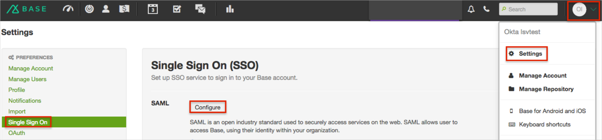
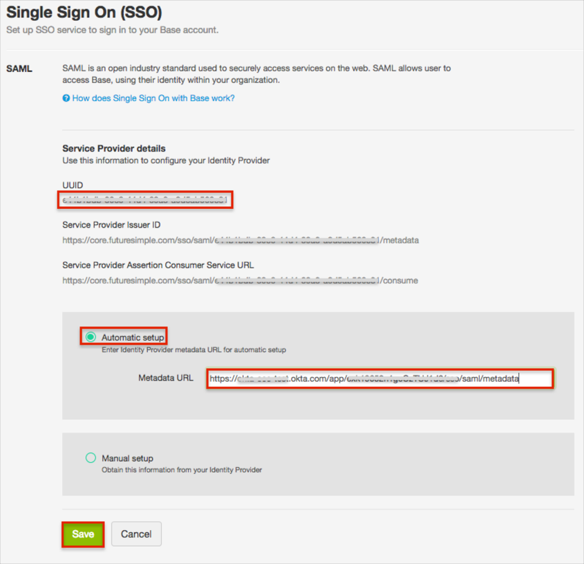
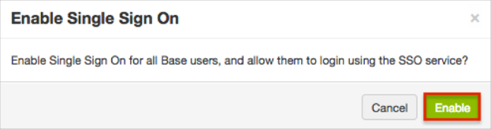
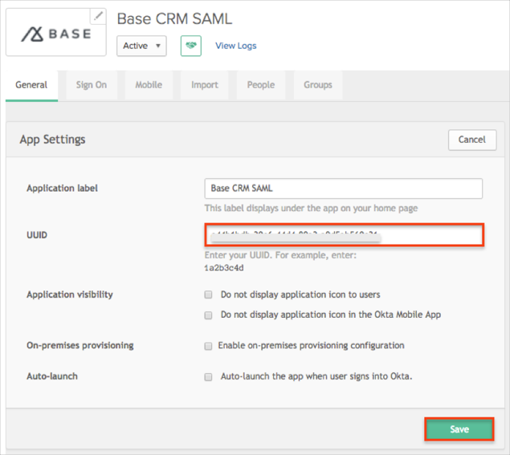
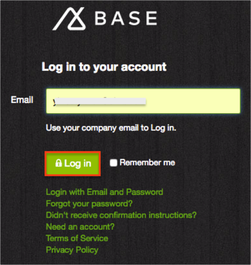

Login to Base CRM as an administrator.
Navigate to Account > Settings > Single Sign On.
Click Configure.

Do the following (see screen shot at end of step for reference):
Make a copy of the UUID value.
Select the Automatic Setup checkbox.
Copy and paste the following Metadata URL:
Sign into the Okta Admin dashboard to generate this value.
Click Save.

Click the Enable button:

In Okta, select the General tab for the Base CRM app, then click Edit.
Enter the UUID value that you copied earlier into the corresponding field.
Click Save.

Done!
Notes:
SP-initiated flows and IDP-initiated flows are supported.
Just In Time (JIT) provisioning is not supported.
Open the login URL: https://core.futuresimple.com/users/login.
Enter your Email.
Click Log in.
